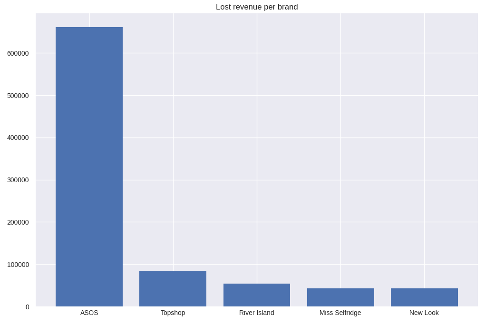
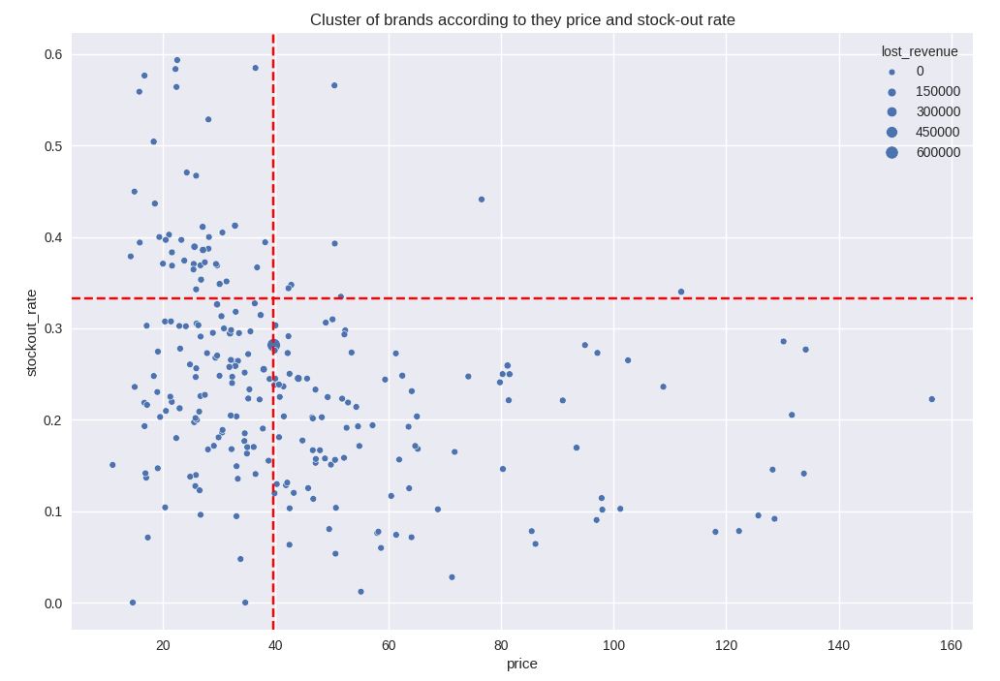

1. Context and Problem Definition
For a project, I was presented with the case of a clothing store that was reporting significant losses in sales. My task was to analyze its data and develop recommendations for the store.
2. Data and Its Preparation
The first step was to clean up the missing or duplicate data using code. Given the size of the
dataset, I chose to keep only the first instance of any duplicate.
Next, I corrected the data types of the "price" and "color" columns, using functions in
Python.
Finally, I extracted additional information from the "description" column to identify the brand
referenced in each row and the phantom revenue.
def price_as_float(price: str):
pattern = r"\d+.\d+"
match = re.search(pattern, price)
return float(match.group()) if match else 0
def get_brand(row: str) -> str:
pattern = r"by [A-Z][a-z]+ [A-Z][a-z]+|by [A-Z][a-z]+|by [A-Z]+"
match = re.search(pattern, row)
if match:
output = match.group()
start_pos = output.find('by')
return output[start_pos+3:]
else:
return "Unknown"
3. Exploratory Data Analysis (EDA)
The first thing I wanted to find out was the number of products by brand that the store carries
in its inventory, as well as the total losses by brand resulting from phantom revenue. This
analysis yielded the following graph.

4. Solution Development
The next step was to calculate the average stock-out value and the average price of products
sold in the store in order to classify the brands based on these two values.
To do this, I grouped the data in the dataset by brand and, using a scatter plot with the
average stock-out and average price as axes, I was able to classify and identify the brands with
lower liquidity.

5. Results and Impact
Based on this information, it was found that a large number of products, which are sold at very high prices, have a very low stock-out rate; therefore, it is recommended to hold a clearance sale for this portion of the inventory.